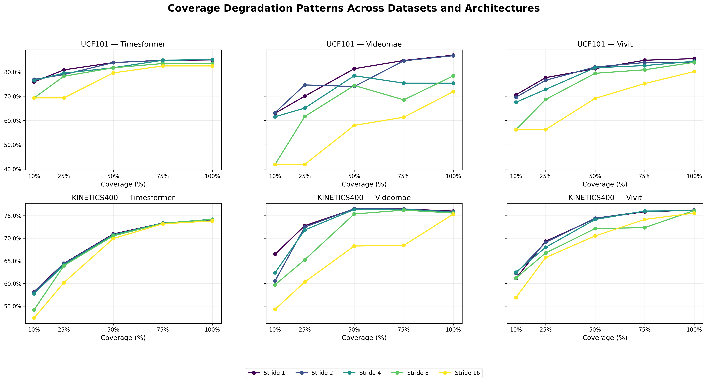
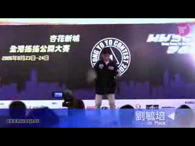
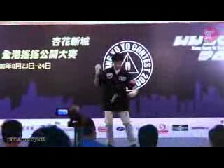

Coverage-Stride Interaction Analysis
These plots show how accuracy varies with different coverage and stride combinations across models and datasets.

This interactive dashboard provides a comprehensive reference for optimal temporal sampling configurations in video action recognition. Explore results across models, datasets, and activity types to find the best coverage-stride combinations for your use case.
High-Frequency Actions (e.g., YoYo, JumpingJack): Use TimeSformer with 100% coverage and stride 1-2 for capturing rapid motions.
Moderate-Frequency Actions (e.g., Sports): ViViT with 75-100% coverage and stride 2-4 offers balanced efficiency.
Low-Frequency Actions (e.g., Typing): VideoMAE with 50-75% coverage and stride 4-8 is robust and efficient.
| Dataset | Model | Peak Accuracy | Best Config | Mean Drop (100%→25%) | Notes |
|---|---|---|---|---|---|
| UCF-101 | TimeSformer | 85.09% | 100%-stride2 | 6.99% | Most robust to stride changes; F(4,500)=8.14, η²=0.061 |
| UCF-101 | VideoMAE | 86.90% | 100%-stride1 | 18.22% | Highest sensitivity to coverage; F(4,500)=32.45, η²=0.206 |
| UCF-101 | ViViT | 85.49% | 100%-stride1 | 13.02% | Balanced performance; F(4,500)=20.94, η²=0.143 |
| Kinetics-400 | TimeSformer | 74.19% | 100%-stride4 | 10.59% | Consistent across configs; F(4,1995)=78.77, η²=0.136 |
| Kinetics-400 | VideoMAE | 76.52% | 50%-stride2 | 7.15% | Benefits from subsampling; F(4,1995)=65.98, η²=0.117 |
| Kinetics-400 | ViViT | 76.19% | 100%-stride1 | 8.24% | Stable at high coverage; F(4,1995)=38.82, η²=0.072 |
These plots show how accuracy varies with different coverage and stride combinations across models and datasets.
Accuracy degradation as temporal coverage decreases, revealing model-specific sensitivities.
One-way ANOVA results showing significance of coverage and stride effects:
Pairwise Welch's t-tests confirm monotonic degradation, with Bonferroni-corrected significance for severe reductions (e.g., 10% vs 50% for TimeSformer UCF).
Accuracy heatmaps showing performance across all coverage-stride combinations.


Distribution of per-class accuracies highlighting heterogeneity in temporal requirements.


Real frames from YoYo action demonstrating the difference between dense and sparse sampling.
 |
 | |
| Dense Sampling (stride=1): Smooth motion | ||
 |
 |
 |
| Sparse Sampling (stride=16): Aliased motion with strobing | ||
This benchmark is extensible! To add new experiments:
Supported extensions: New models, datasets (including sign language), activity categories.
All experiments conducted on UCF-101 and Kinetics-400 datasets with TimeSformer, VideoMAE, and ViViT models. Evaluations cover 25 coverage-stride combinations. Full analysis in comprehensive report.